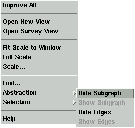

Pop-Up Menu
The pop-up menu is displayed when the mouse pointer is inside the graph area of a base window and the right mouse button is pressed. A graph node or edge may define its own pop-up menu by using a specific menu attribute, so when the mouse pointer is over a node or edge, you may not get the general pop-up menu shown above, but the menu that is specific to the particular node or edge.
The general pop-up menu contains some frequently used menu operations for direct access in the graph area. You have to load a graph before getting this pop-up menu. The following operations are available in the menu. Click on the links below to read about the corresponding operations which are also available in the pull-down menus of the base window.
- Improve All
- Open New View
- Open Survey View
- Fit Scale to Window
- Full Scale
- Scale...
- Find...
- Abstraction
- Selection
- Help (same as menu "Help/Overview")